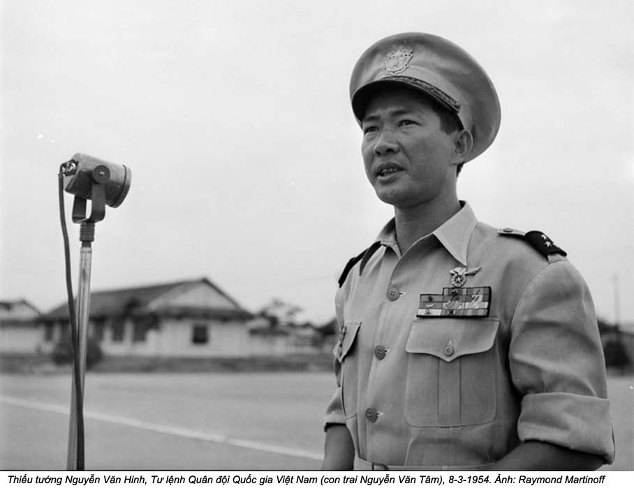
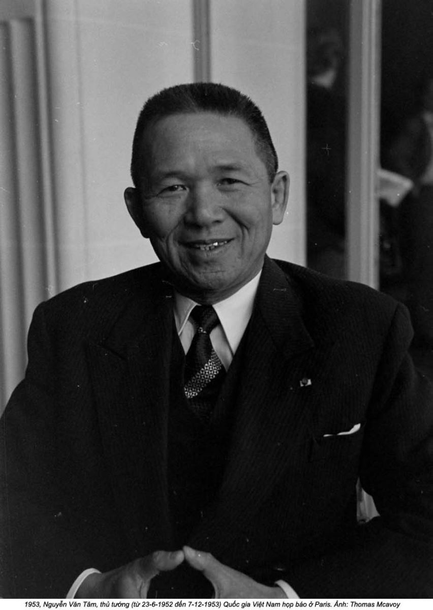
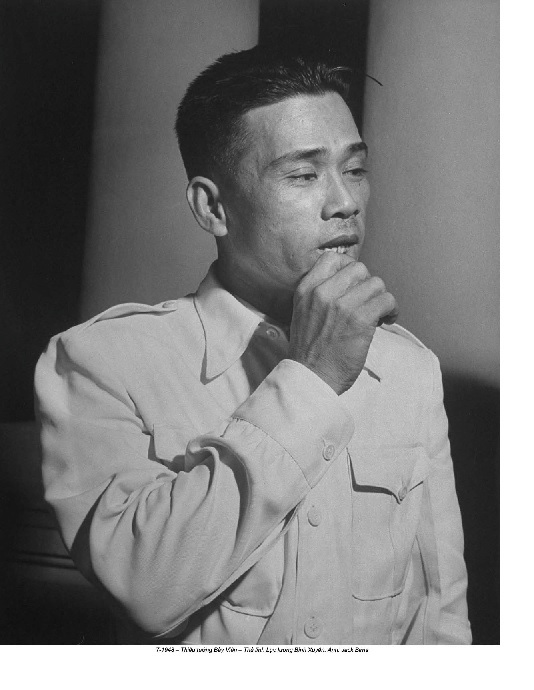
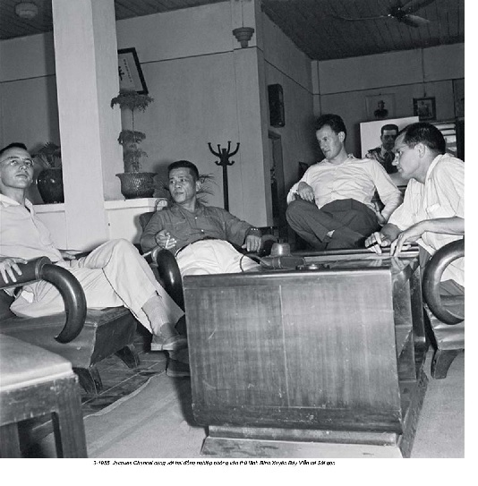

Chương 8

ánh cửa mở ra trước khi tôi gõ, và John Phạm hiện ra trên ngưỡng cửa. Ông là cha của chị dâu của bạn tôi. Tôi đã gặp con gái ông đúng một lần, nhưng John đã chào đón tôi như một người thân lưu lạc đã lâu. Ông mặc bộ quần áo thông thường của một lão ông miền trung tây, chiếc áo sơ mi kẻ ca rô bỏ trong quần chinos thắt dây lưng. Nụ cười toe toét hết cỡ khiến đôi má của ông nhô lên thành hai quả táo hồng hào. “Chào mừng đến nhà tôi”, ông rạng rỡ, đoạn nắm tay tôi lắc lên lắc xuống như thể ông đang bơm nước lên từ một cái giếng vậy. Cú bắt tay của ông lão bảy mươi mốt tuổi hãy còn mạnh mẽ lắm. Khi còn là một chàng trai trẻ, John từng là lính bảo vệ tư gia Tổng thống ở Sài Gòn từ năm 1954 đến năm 1963. Giờ đây ông sống trong một ngôi nhà nông trại có tầng lửng ở mặt Kansas của Kansas City.
Ngôi nhà đã là nhà của John kể từ cuối những năm 1970. Ông đã trốn thoát khỏi Việt Nam trên một chiếc thuyền câu cá từ Đà Nẳng, nơi mà các binh sĩ Mỹ gọi là Biển Trung Hoa, chỉ ba giờ trước khi thành phố rơi vào tay Cộng sản năm 1975. John đến Hoa Kỳ cùng vợ và mười đứa con với hai bàn tay trắng. Một trung úy thân thiết đã khuyên ông hãy đưa gia đình rời khỏi California - quá đông đúc, ông này nói. Vì vậy John đã nhìn vào bản đồ và chọn Kansas vì nó nằm ngay giữa đất nước.
Những tiếng kèn cor và tiếng tiêu của một sô trình diễn trên ti vi văng vẳng xuống từ căn phòng nhỏ. Tôi nhận được lời chào đầy bẽn lẽn của một đứa cháu đang đi ngang qua, và John mỉm cười với thằng bé đang rụt rè đi vào nhà bếp. “Xin mời”, John vừa nói vừa chỉ tôi chiếc tràng kỷ màu quả đào héo, “ngồi xuống, chúng ta hãy nói chuyện”.
John hơi thấp hơn tôi, vì vậy ngay cả khi đang ngồi, tôi vẫn có thể nhìn thấy đỉnh đầu của ông. Màu trắng của nước da đầu lộ ra qua những lằn lược trên mái tóc bạc như cước của ông. Điều đó khiến ông trông có vẻ dễ tổn thương. Tôi đã cố hình dung ông khi còn là một cậu trai hai mươi tuổi, dẻo dai và nhanh nhẹn. Ông hẳn đã là một tay xạ thủ cừ khôi để được chọn làm một vệ binh trong dinh phủ. Nhưng thật khó để dung hợp một lão ông tươi cười và ân cần trước mặt tôi với chàng thanh niên cứng cỏi lạnh lùng mà ông đã từng. John đã làm việc cho cùng một bộ máy an ninh quốc gia khét tiếng không kém những đội mật vụ ném người vào những chuồng cọp - những xà lim chật ních trên đảo Côn Sơn nơi hàng ngàn người đã bị tra tấn, bỏ đói, và giết chết trong suốt cuộc chiến.
Những ông chủ của John, Tổng thống và em trai ông, sống ngay trong dinh phủ gần chốt gác của John. Ông đã dành gần chín năm để làm việc bên cạnh Ngô Đình Nhu và vợ ông, bà Nhu.
Tôi ngồi vào vị trí của mình trên tràng kỷ khi tôi nhìn thấy vật trang trí trên bức tường trước mặt tôi. Chúa Jesus bị treo trên thập giá vàng, và ngay sát bên ngài, một bức chân dung Tổng thống Ngô Đình Diệm. Một lá cờ sọc đỏ vàng treo trong góc. Ngài Tổng thống đã chết hơn bốn mươi năm, Việt Nam Cộng hòa đã mất ba mươi năm, nhưng trong ngôi nhà này, quá khứ hãy còn rất sống động.
Tôi trò chuyện với John đến tận chiều. Mùi cỏ chanh, giấm, và thịt rán xông lên từ nhà bếp. Vợ John bước vào, hay tay đặt trên tạp đề, hỏi chúng tôi có muốn dùng một bát súp không. Bà đã làm món bún bò Huế, một món thịt bò có vị rất cay từ miền Trung Việt Nam. Đang khi tôi húp sì sụp những sợi bún dài lượt thượt, John tiếp tục nói về cuộc sống trong những dinh thự của ông Diệm, nỗi hoài nhớ về quốc gia thời trai trẻ chất chứa trong giọng ông.
Trong ngôi nhà này, Jesus và Diệm đều là những đấng cứu tinh và trường tồn.
Sinh ra ở miền Trung Việt Nam vào năm 1901, Ngô Đình Diệm là một học sinh giỏi khi còn là một cậu bé, nhưng thay vì theo chân các anh đến Pháp hoặc vào học trường dòng, ông đã dấn thân vào những hoạt động chính trị địa phương. Ông Diệm bước chân vào chính quyền tỉnh dưới thời Pháp thuộc với chức quận trưởng khi ông hai mươi tuổi. Những cán bộ công chức ở Việt Nam là những sĩ phu trí thức được gọi là quan lại; họ là những sản phẩm của sự đào tạo khắt khe và phải vượt qua những kỳ thi của triều đình về các môn viết, văn chương, lịch sử, và toán học. Chỉ trong một vài năm, ông Diệm đã leo lên chức giám sát hành chính; ông là người thu thuế, quận trưởng, và thẩm phán của cả vùng. Chức vụ của ông cho phép ông ngồi xe kéo, nhưng ông Diệm thích cưỡi con ngựa của chính mình do một anh phu dắt đi hơn. Ông đã đề xuất những cuộc cải cách táo bạo cho những cấp quan chức Việt, bao gồm nhiều sự tự quyết hơn trước người Pháp và được giáo dục tốt hơn, nhưng đã bị làm ngơ. Được bổ nhiệm làm Tuần vũ Phan Thiết ở vùng đông nam bộ Việt Nam vào năm 1929, ông Diệm đã nổi tiếng là người công bằng và chính trực một cách không thể lay chuyển. Ông ngay thẳng đến độ khi người Pháp tiếp tục cự tuyệt những cải cách mà ông đã đề nghị, ông trả lại tất cả các tước hiệu, huy chương và lui về ở ẩn. Với ông thì hoặc là tất cả hoặc không gì cả.(1)
Ông Diệm đã đột ngột rút lui khỏi sân khấu chính trường vào năm 1933 nhưng không phải là hoàn toàn im hơi lặng tiếng. Ông vẫn tiếp tục làm việc sau hậu trường đến năm 1954, khi ông xuất hiện trở lại như một nhân vật của công chúng.
Ông bà Nhu và ba người con của họ đến sân bay Tân Sơn Nhất tại Sài Gòn vào chiều ngày 25 tháng Sáu năm 1954, chỉ để biết rằng chuyến bay đến từ Âu châu đã bị hoãn lại. Cùng với ông bà Nhu, một đám đông vài trăm người đã chờ đợi chuyến bay hạ cánh, bao gồm một tướng lãnh cấp cao trong quân đội thuộc địa Pháp, các thành viên của hoàng gia, những nhà ngoại giao nước ngoài, và những quan chức trong Quân lực Việt Nam Cộng hòa.(2) Chồng bà Nhu đã nhất quyết yêu cầu vợ và các con cùng gia nhập phái đoàn gồm một vài trong số những nhân vật quan trọng nhất toàn cõi Đông Dương đang chờ đợi sự trở lại của anh trai ông Nhu. Cuối cùng, Ngô Đình Diệm đã được bổ nhiệm làm tân Thủ tướng Việt Nam Cộng hòa tại một hội nghị hòa bình ở Genève, Thụy Sĩ. Trong cái mà sau này sẽ được gọi là Hiệp định Genève, các bên tham dự - Hoa Kỳ, Anh, Pháp, Liên Xô, và Trung Quốc - đã đặt dấu chấm hết cho cuộc chiến giữa Việt Minh và Pháp bằng việc thống nhất chia Việt Nam thành hai quốc gia ngăn cách bởi vĩ tuyến mười bảy. Hồ Chí Minh sẽ làm chủ tịch của quốc gia Cộng sản miền Bắc, từ tổng hành dinh của ông ở Hà Nội. Bảo Đại, cựu hoàng đế, sẽ là quốc trưởng danh nghĩa của nhà nước mới không Cộng sản phía nam, nhưng ông vẫn đang ở Pháp. Quyền lực thật sự của chính phủ sẽ vào tay vị Thủ tướng hãy còn khá vô danh mà người Mỹ ủng hộ, người đàn ông trên bức tường của John Phạm và là anh chồng bà Nhu: Ngô Đình Diệm.
Dưới thời ông Diệm, miền Nam Việt Nam sẽ được “giải phóng” - giải phóng khỏi chủ nghĩa thực dân, giải phóng khỏi chủ nghĩa Cộng sản, nhưng còn giải phóng khỏi cái gì khác nữa thì chưa rõ. Trên lý thuyết, trong vòng hai năm, vào năm 1956, cả nước sẽ tổ chức tổng tuyển cử. Người Việt Nam sẽ tự quyết định những gì họ muốn, nhưng cho tới lúc đó, Bắc Việt Cộng sản ở trên vĩ tuyến mười bảy, và một cái gì đó hoàn toàn mới đã được tạo ra ở phía dưới vĩ tuyến ấy.(3)
Chờ ông Diệm tại sân bay, bà Nhu ôm bé trai út, Quỳnh, vào lòng để trấn an nó. Trong bóng mát nhà chờ máy bay, bà kẹp đứa bé bên hông và liên tục đi qua đi lại trên đôi xăng đan của mình. Chẳng còn tay nào để giữ hai đứa nhỏ còn lại; sau khi quan sát chúng ngọ nguậy không yên và bứt rứt những chiếc cổ áo xinh đẹp của mình, bà gật đầu với bé gái tám tuổi và em trai năm tuổi của nó, và chúng chạy đi, lao qua bên kia con đường nhựa sạch bong chơi trò cút bắt. Bọn trẻ đã không cần được gọi lại khi máy bay đến.
Nó chỉ là một cái chấm đen trên nền trời sáng rỡ, nhưng nó tượng trưng cho một cái gì đó lớn lao và hơi đáng sợ vì nó xa lạ: tự do. Lệ Thủy và Trác đã chạy đến đứng bên cha mẹ chúng, và cùng nhau cả gia đình năm người đương đầu với tiếng gầm rống của cỗ máy đang lao đến với đôi tay bịt chặt tai.
Một người đàn ông năm mươi ba tuổi bước ra khỏi phi cơ và vẫy tay về phía những cái đầu lố nhố. Ông Diệm nheo nheo mắt - lẽ nào ông không quen với ánh mặt trời nhiệt đới chói chang trong suốt thời gian xa xứ? Lẽ nào ông thậm chí có thể nhìn thấy họ đang đứng đó đợi ông? Rốt cuộc vào ngay lúc này, ông Diệm trông vẫn không giống như người đàn ông trong trí tưởng tượng của nhiều người. Ông có một gương mặt tròn vành vạnh và một cái đầu hầu như dính liền với vai. Mái tóc đen của ông Diệm, bóng bẩy vuốt ngược ra sau như những chiếc lông của con thú ướt lướt thướt, làm nổi bật ấn tượng tổng thể của một chú chim cánh cụt đến từ cái bụng bự của ông, bộ com lê màu da cá mập trắng tiêu biểu, và dáng đi vòng kiểng. Ông thậm chí có lẽ đã trở nên tròn trĩnh hơn sau những chuyến đi của mình.
Bà Nhu đã không nhìn thấy ông Diệm trong bốn năm, kể từ khi ông ra đi khỏi Việt Nam. Ngoại trừ lần ở lại ngắn ngủi với vợ chồng bà Nhu ở Đà Lạt vào cuối những năm 1940, anh trai ông Nhu đã luôn luôn có vẻ là một nhân vật xa cách với bà. Ông hầu như suýt soát tuổi cha bà, và trước Chiến tranh Đông Dương lần thứ nhất, ông Diệm đã quá bận bịu xây dựng một đảng chính trị bí mật dưới cái tên Đại Việt Phục Hưng Hội hơn là quan tâm nhiều đến cô vợ trẻ của em trai mình. Khi người Pháp săn lùng ông vào năm 1944, ông Diệm đã phải trốn chui trốn nhủi. Ông trốn thoát với sự giúp đỡ của viên lãnh sự Nhật, người đã lén đưa ông ra khỏi thành phố bằng cách cải trang ông thành một sĩ quan Nhật. Ông Diệm đã vào lại Sài Gòn trong khi ông bà Nhu vẫn ở lại Huế. Ông được an toàn ở đó cho đến sau khi người Nhật đầu hàng vào cuối Thế chiến thứ hai. Giống như bà Nhu, ông Diệm đã bị những người Cộng sản cầm tù vào năm 1946. Ông bị chặn lại trên một chuyến tàu lửa trở lại Huế, bị đưa đến một túp lều trên vùng núi xa xôi, và bị giam ở đó ba tháng trước khi được đưa tới Hà Nội. Lãnh tụ của Việt Minh, ông Hồ Chí Minh, đã yêu cầu một cuộc gặp mặt tay đôi.(4)
Hồ Chí Minh và Ngô Đình Diệm có một vài điểm chung. Cả hai đều đến từ miền Trung Việt Nam, và cả hai đều được cha họ thấm nhuần những phẩm cách của một nhà dân tộc chủ nghĩa chống Pháp và chống thực dân. Ông Hồ thậm chí đã học tại ngôi trường ở Huế do cha ông Diệm sáng lập. Giống như ông Diệm, Hồ Chí Minh hy vọng rằng người Mỹ sẽ giúp người Việt Nam trong cuộc kháng chiến chống Pháp. Ông có lý do để nghĩ như vậy. Cơ quan Tình báo Chiến lược (OSS), tiền thân của CIA, đã can thiệp vì ông Hồ khi ông bị giam cẩm ở Trung Hoa Dân Quốc. Ông đã trích dẫn một phần của Tuyên ngôn Độc lập Mỹ khi ông tuyên bố nền độc lập của Việt Nam vào tháng Tám năm 1945, và những người lính Việt Minh của ông đã tham gia vào các sứ mệnh chống Nhật của Mỹ. Cùng lúc, Hồ Chí Minh là một người Cộng sản sắt đá, một môn đồ của Karl Marx và là người tin vào cuộc cách mạng vô sản. Ông những muốn xây dựng một Việt Nam độc lập, xã hội chủ nghĩa, nhưng ông cũng biết rằng cơ hội tốt nhất để đưa Việt Nam đến sự độc lập đó là bằng việc tạo ra một sự nghiệp chung cho những người tư bản chủ nghĩa, địa chủ, và tư sản, chí ít trong một thời gian.
Xét đến sự việc họ sẽ đối đầu với nhau chỉ vừa vặn một thập niên sau, không có gì đáng ngạc nhiên khi ông Diệm không bao giờ công khai thừa nhận đã từng tiếp xúc với những lãnh tụ Việt Minh. Nhưng những nghiên cứu gần đây về những hoạt động của ông Diệm trong quãng thời gian đó chứng tỏ rằng trên thực tế ông đã có liên hệ. Ông Diệm đã quan tâm đến việc để ngỏ những lựa chọn của mình càng lâu càng tốt. Ông đang chờ xem liệu một phương án thứ ba, không phải người Pháp cũng không phải người Cộng sản, có khả thi hay không. Trước năm 1949 ông Diệm rốt cuộc đã đi đến một quyết định dứt khoát, ông cự tuyệt Việt Minh và đồng thời tuyên bố sự hợp tác của cựu hoàng Bảo Đại với người Pháp là không thể chấp nhận được. Đứng một mình thì nguy hiểm thật, nhưng ông Diệm đã chán ngấy những giải pháp nửa vời. “Tôi tán thành những cải cách xã hội triệt để và táo bạo, với điều kiện là phẩm giá con người sẽ luôn được tôn trọng và được tự do phát triển”.(5) Với ý nghĩa này ông Diệm đã công bố một hiệp ước dưới tên ông vào ngày 16 tháng Sáu năm 1949, hy vọng rằng, theo học giả Edward Miller, tập hợp được mọi người dưới ngọn cờ đại nghĩa của ông. “Lời tuyên bố này đã được rất nhiều người Việt Nam đọc và ghi nhớ, nhưng nó đã không tạo ra một làn sóng mến mộ mới mẻ dành cho ông Diệm... Tác động ngay tức thì của nó là làm cạn kiệt lòng kiên nhẫn của cả người Pháp và Việt Minh”. Ông Diệm đang tuyệt giao với mọi người nhằm bắt đầu lại một cái gì đó mới mẻ.
Sau chuyến lưu trú ngắn ngủi với gia đình ông Nhu ở Đà Lạt, ông Diệm xuất dương để tìm kiếm những đồng minh mới, mà đầu tiên, không có kết quả, đến Nhật Bản và sau đó đến Mỹ. Ông Diệm đã nhận ra ông có thể lợi dụng mối ác cảm lịch sử của người Mỹ đối với chủ nghĩa thực dân. Ông đã đến vào một thời điểm không thể thích hợp hơn. Đó là vào thời kỳ đỉnh điểm của Nỗi Sợ Đỏ; những người Mỹ đang xây hầm tránh bom và dạy trẻ em trốn tránh những bức xạ của bom hạt nhân Nga dưới bàn học ở trường. Kỷ nguyên McCarthy là thời điểm hoàn hảo để ông Diệm xuất trình tấm căn cước chống cộng của mình. Ông đã thành công một cách khó tin trong việc tìm kiếm những người có ảnh hưởng đồng cảm với chính nghĩa của ông. Hồng y giáo chủ đẩy quyền lực Francis Spellman, cùng với các học giả, hàng tá thành viên Quốc hội, bao gồm thượng nghị sĩ trẻ đến từ Massachusetts, John F. Kennedy, và ngay cả Wild Bill Donovan, người sáng lập ra OSS, thảy đều bày tỏ sự khâm phục đối với ông Diệm.
Sự ủng hộ và khích lệ tinh thần thực là tốt đẹp và gây phấn chấn, nhưng công việc quyết định thì đang diễn ra ở Việt Nam, như bà Nhu biết rất rõ. Chồng bà, em trai ông Diệm, là người đang đặt nền móng cho sự trở lại của ông Diệm. Chỉ có chống cộng không thôi thì không đủ; ở đây còn cần đến một triết lý chính trị thật sự. Ông Nhu đã mô phỏng triết lý nhân vị chủ nghĩa của đạo Công giáo sao cho phù hợp với tình hình đặc thù của Việt Nam, một công cuộc đồ sộ gây ấn tượng bởi tính táo bạo hơn là những kết quả của nó. Đảng Cần Lao đã sẵn sàng để trở thành nền tảng thiết thực cho một phong trào chính trị. Ông Nhu liên kết với các nhà hoạt động công đoàn, ủng hộ sự xây dựng các liên minh công nông, và xuất bản một tập san chính trị gọi là Xã Hội, bênh vực các nghiệp đoàn.
Bà Nhu đã rời Đà Lạt năm 1953 khi ông Nhu kêu gọi bà và các con chuyển về Sài Gòn để hỗ trợ ông Diệm lên nắm quyền. Họ thuê năm phòng kề nhau sát bệnh viện St. Pierre. Hai phòng làm nhà in cho tờ tuần san của ông Nhu, và ba phòng còn lại được dùng làm khu vực sinh hoạt cho gia đình năm người. Bà Nhu đã trang hoàng phòng ngủ bằng những đồ đạc cũ bà tìm thấy ở chợ trời. Những hoa văn chạm trổ trên đồ gỗ làm bà vui thích; chúng đủ tao nhã để khiến người ta hình dung rằng một gia đình thực dân khá giả nào đó đã bỏ lại chúng khi họ trốn chạy về Pháp. Đó là sự an ủi đôi chút cho cái đại bản doanh “đầy cứt ruồi” mà họ sống trong đó.
Bà Nhu mô tả những ngày đầu ở Sài Gòn là vô vị đến mức bà muốn khóc. Nhà văn Pháp Lucien Bodard đã từng nhìn thấy khung cảnh lòe loẹt rẻ tiền lúc bà còn ở Đà Lạt. Ông tả lại hoàn cảnh ở Sài Gòn của bà thậm chí tồi tệ hơn. “Lần đầu tiên tôi đến đó, tôi băng qua một cái sân bụi bặm phơi đầy quần áo. Từ một hành lang lợp tôn hiện ra một phụ nữ trẻ mặc áo dài trắng và quần xanh. Trông cô ta thật lôi thôi lếch thếch. Bọn trẻ con bám lấy cô ta. Cô ta tiều tụy bởi nỗi thất vọng đến độ tôi đã không nhận ra cô ta”. Đây không phải là cuộc hôn nhân hay cuộc sống mà cô đã được sửa soạn cho. “Tất cả những gì cô ta phải làm là giặt giũ, nấu ăn và tắm rửa cho con”.(6)
Một buổi chiều, bà Nhu đang thiu thiu chợp mắt thì giật mình dậy bởi những tiếng thụi ầm ĩ đến từ phòng in tờ tập san của chồng ở sát bên. Bọn trẻ vẫn đang ngủ nên bà lẻn vào bên trong không một tiếng động. Bà nhìn thấy những tấm lưng của tám người đàn ông, mặc quần áo trắng và đội nón rơm giống hệt nhau, châu đầu xung quanh một cái gì đó dưới đất. Tầm nhìn bị khuất, và bà không thể nhận rõ cái gì đang ở trước mặt họ. Thay vì cảm thấy sợ, bà Nhu điên tiết với ý nghĩ rằng những người lạ đã xâm phạm vào chỗ ở của gia đình bà. Bà sắp sửa hiểu được cái gì đang diễn ra. Bà tháo một chiếc guốc ra, một loại guốc đế mềm bà mang đi trong nhà. Nhưng bây giờ bà sử dụng nó với mục đích khác. Bà đập chiếc guốc vào lưng người đàn ông gần bà nhất.
“Chuyện gì đang xảy ra ở đây?” Bà hỏi.
Bảy người kia dừng cái việc họ đang làm và bước lùi lại đủ để lộ ra một người đàn ông đang cúi thu lù dưới sàn. Anh ta ngồi thẳng dậy và hạ hai tay xuống khỏi đầu, và đó là lúc bà Nhu thấy rằng họ đang đánh đập người đàn ông mà chồng bà đã thuê để chạy nhà in. Anh ta bò lết trên hai chân, máu chảy xuống mặt. Thay vì nói lời cảm ơn, anh nhô người lên thành một cái nhún vai và cười với bà Nhu một nụ cười gượng gạo.
“Ồ, không có gì đâu”, anh ta nói với tất cả vẻ hờ hững. Anh ta có thể huy động và tự làm mình bận rộn bằng việc rút một điếu thuốc ra khỏi bao thuốc rúm ró.
Bà Nhu nhìn xung quanh, nhưng không ai khác trong phòng cử động. Người đàn ông này rõ ràng không muốn sự giúp đỡ của bà, nên bà bước lùi lại. Bà có thể làm gì đây? Niềm kiêu hãnh bị tổn thương và nỗi thất vọng trào dâng, bà Nhu mang lại chiếc guốc và sải bước ra khỏi phòng.
Bà giam mình trong nhà cho đến lúc chồng về. Bà lao vào vòng tay ông, gặng hỏi chuyện gì đã xảy ra. Những người đàn ông đó là ai? Nhưng ông Nhu không đáp. Bà tự thấy mình đang lấy làm kinh ngạc về người đàn ông bà đã kết hôn. Chẳng phải bà đã cứu người làm của ông khỏi bị thương hay sao? Chuyện gì xảy ra nếu ông Nhu ở trong văn phòng, hay đang bày mưu tính kế như thường lệ trong một tiệm cà phê vô danh nào đó? Liệu họ có làm hại ông ấy không?
Nỗi âu lo của bà Nhu rốt cuộc đã khơi ra một câu trả lời, nhưng không phải câu trả lời mà bà mong đợi. Ông Nhu giữ một thái độ lạnh nhạt và nở nụ cười toe toét như thường lệ. “Hãy lo việc của em và đừng dính vào”, ông nói, và mặc cho nụ cười trên gương mặt ông, bà biết đó là một lời cảnh cáo. Về phần người đàn ông làm việc trong nhà in, người mà bà Nhu biết chắc chắn mình đã cứu mạng anh ta vào ngày đó, anh ta tiếp tục làm việc ở phòng sát bên. Và mỗi lần nhìn thấy anh ta, bà Nhu lại một lần nữa được nhắc nhở về việc giữa bà và người chồng lúc bấy giờ là một khoảng cách xa xôi vời vợi đến thế nào.
Ông Diệm, tân Thủ tướng, đã đối mặt với tất cả mọi loại vấn đề trong lần trở về Việt Nam năm 1954, bắt đầu với sự kiện rằng ông đã kế thừa một hệ thống đổ vỡ. Ngân khố quốc gia trống rỗng. Người Pháp đã không đào tạo những nhà quản lý người Việt thạo việc. Việt Nam Cộng hòa hoàn toàn bị tê liệt về quân sự và chính trị. Những băng đảng thống trị các thành phố. Chợ đen mọc lên như nấm. Những thành phần chi phối kinh tế là ma túy, cờ bạc, và mãi dâm. Dòng người tị nạn từ miền Bắc chỉ làm cho mọi chuyện tồi tệ thêm. Không có đủ chỗ cho tất cả nhũng người tị nạn sống và làm việc. Họ dồn nhung nhúc xung quanh Sài Gòn; những gia đình ngủ chen chúc trong những ống xảy dựng bằng xi măng.
Sau khi chia đôi đất nước, Hiệp định Genève có một điều khoản cho phép người dân vượt qua cả hai phía của đường biên giới, nhưng mọi sự di cư sẽ phải diễn ra nội trong giới hạn nghiêm ngặt một năm. Quân đội Pháp và hải quân Mỹ đã cung cấp phương tiện vận tải hậu cần cho những người miền Bắc đang chạy vào Nam, trong đó Hoa Kỳ tài trợ hầu như tất cả ngân sách. CIA cũng gởi một đội quân để thuyết phục càng nhiều người miền Bắc di cư vào miền Nam càng tốt, tạo ra bằng chứng rằng nhân dân đang “bỏ phiếu bằng chân” cho người của Mỹ, ông Diệm, và lời hứa về một Việt Nam tự do.(7) Nhưng không ai tưởng tượng được lại có nhiều người đã ra đi như vậy. Một cuộc di cư khoảng một triệu người từ miền Bắc Cộng sản đổ vào miền Nam. Với tất cả những gì Việt Minh đã làm, lôi cuốn bản năng dân tộc chủ nghĩa nơi nhiều người Việt Nam và thành công trong công cuộc đánh đuổi người Pháp ra khỏi bờ cõi, một bộ phận dân chúng vẫn quá khiếp sợ chủ nghĩa Cộng sản để nán lại và chứng kiến nó hành động. Có những lời thì thầm về những cái sắp xảy đến: sự thanh trừng giai cấp, cải cách ruộng đất, và sự xâm phạm của nhà nước vào những sự vụ địa phương - đó là chưa nói đến tôn giáo. Đặc biệt những người Công giáo đã lũ lượt tháo chạy.
Dòng người đi ngược lại hầu như chỉ là nhỏ giọt. Những cán bộ Cộng sản cao cấp nhất ở miền Nam tập kết ra Bắc, và chính phủ ông Hồ Chí Minh đã triệu hồi những đơn vị quân đội nhân dân nổi bật nhất nhưng kêu gọi những người còn lại vốn đã biểu thị sự tán thành Chủ nghĩa Cộng sản ở lại: “ra Bắc nghĩa là chiến thắng, ở lại miền Nam là gặt hái thành công”.(8) Những người ủng hộ Việt Minh ở miền Nam lui vào vòng bí mật. Họ sẽ có ích vào một lúc nào đó khi cuộc đấu tranh tái thống nhất được khởi sự.
Áp lực dân số tức thời trên Việt Nam Cộng hòa đã đe dọa làm sụp đổ chế độ mới. Ngay cả sự đánh giá của quân đội Mỹ về hoàn cảnh mà ông Diệm lâm vào cũng đáng lo ngại. Những vấn đề mà vị tân Thủ tướng đối mặt thật quá nhiều và quá khó khăn, bản báo cáo kết luận, đến độ có lẽ là “không khắc phục được”.(9)
Không lâu sau khi ông Diệm trở lại, bà Nhu nhận ra với nỗi khiếp sợ rằng việc ông lên nắm quyền cai trị Việt Nam Cộng hòa đã là một mưu đồ tinh vi. Bất kỳ ai đối mặt với tình trạng hỗn loạn này đều chắc chắn phải thất bại - và người Pháp căm ghét ông Diệm đủ để muốn hủy hoại ông. Ông anh chồng của bà hiển nhiên đã thể hiện một cá tính độc lập và vô ơn đối với sứ mệnh khai hóa của người Pháp. Nếu ông Diệm thất bại, người Pháp có thể biện luận một cách hợp lý việc thay thế ông bằng một ai đó dễ phục tùng ảnh hưởng của họ hơn.
Bà Nhu không phải đang tưởng tượng ra mọi chuyện. Người Pháp thật sự đang tìm cách tống khứ ông Diệm, như Edward Lansdale đã xác nhận. Lansdale đã gia nhập quân đội Mỹ sau vụ Trân Châu Cảng và được tuyển mộ vào ngành tình báo quân sự, sau đó là OSS, bởi Wild Bill Donovan. Ông đã trở nên nổi bật với sự thành công trong những chiến dịch chống nổi loạn và được gởi đến Việt Nam năm 1954 để điều hành sứ mệnh quân sự ở Sài Gòn. Khi các quan chức người Mỹ khác cố truyền đạt những nỗi ngờ vực về vị lãnh tụ Việt Nam Cộng hòa với Tổng thống Dwight D. Eisenhower và Bộ Ngoại giao ở Washington, Lansdale đã khéo léo lẩn tránh và phản bác lại, xác định một lập trường tái xác nhận sự ủng hộ của Mỹ vào vị lãnh tụ ở Sài Gòn. Một số người nói rằng Graham Greene đã xây dựng nhân vật hảo hán giang hồ và ngây thơ một cách nguy hiểm Alden Pyle trong Người Mỹ Trầm Lặng dựa trên Lansdale, nhưng nhiều người Mỹ nghĩ rằng ông là một người hùng của sự nghiệp chống cộng. John F. Kennedy là một trong số những người coi Lansdale là một James Bond có ria mép ở bên này Đại Tây Dương. Nếu có một điều gì nữa về ông, thì Lansdale là một nhân chứng về sự can thiệp của người Pháp vào chính quyền ông Diệm. Theo quan điểm của Lansdale, người Pháp cảm thấy ông Diệm “là một thứ muối xát vào vết thương nhức nhối của họ”. Việc Pháp mất Đông Dương vào tay của một đạo quân Cộng sản đã đủ tồi tệ, và giờ thì ông Diệm lên nắm quyền, một thế kỷ của niềm kiêu hãnh thực dân Pháp đang lâm nguy. Ông lại đang thay tên những con đường theo tên những nhà ái quốc Việt Nam, quốc hữu hóa các ngành công nghiệp của Pháp, và ra sức làm cho những người Pháp còn lại ở Việt Nam cảm thấy không được hoan nghênh. Người Pháp nhận thấy rằng để tự bảo vệ bản thân và lợi ích chiến lược lâu dài của mình ở Đông Dương, họ cần rũ bỏ ông Diệm.
Có những người đã hiểu chuyện nhanh hơn. Ngay từ ban đầu, chồng của bà Nhu đã tỏ ra “vô cùng lo lắng” việc anh trai ông “không ý thức đầy đủ về mức độ nghiêm trọng cực kỳ của tình hình ở Việt Nam” khi ông tiếp nhận chức Thủ tướng từ hoàng đế Bảo Đại năm 1954. Ông Diệm đã hình thành một “nỗi căm ghét mù quáng với người Pháp” và với người đã ban cái vinh dự hiểm độc của chức Thủ tướng cho ông. Bộ Ngoại giao Hoa Kỳ đã khuyến cáo rằng “Bảo Đại đừng bao giờ nên trở lại Việt Nam vì ông sẽ gặp nguy hiểm tính mạng”.(10) Một khi những hàm ý sâu xa đã được hiểu rõ, bà Nhu coi âm mưu đó là chuyện rất riêng tư. Sau tất cả những giờ ở bên ông anh họ ở Đà Lạt, vuốt ve niềm kiêu hãnh và đánh bóng cái tôi của ông, bà cảm thấy mình bị phản bội. Bà đã còn dám nghĩ rằng vì bà, Bảo Đại đã trao cho ông Diệm một cơ hội làm người vĩ đại. Bà có thể đã tự hào về chuyện đó khi nhiều điều khác chưa lộ ra. Giờ đây bà thấy rằng anh họ bà đã lợi dụng bà và gia đình bà. Bà sẽ không tha thứ cho ông ta lẫn người Pháp.
Năm 1954 và 1955, ông bà Nhu đã kết thân với những người Mỹ, và bà Nhu đã trở nên gắn bó với một phụ nữ trạc tuổi bà tên là Virginia Spence. Spence là một nhân viên hợp đồng của CIA mà nhờ nói trôi chảy tiếng Pháp đã được gởi đến Sài Gòn không kinh qua sự huấn luyện tác nghiệp. CIA mô tả tình bạn của cô với bà Nhu là “chân thành”, và ông Nhu tất nhiên đã khuyến khích vợ theo đuổi nó. Vì tình bạn của họ, bản thân ông Nhu nổi lên trong mắt Spence như “kẻ hứa hẹn nhất với một phần số không mấy ấn tượng”. Mô tả của cô về ông đầy sự hoài nghi: ông là một “kẻ lập mưu bẩm sinh”, và bản chất vụng trộm của vai trò ông trong chính quyền ông Diệm dường như đã củng cố phân tích đầu tiên của cô. Cô cũng mô tả ông như một gã thôn quê mùa ngờ nghệch có thể mau chóng rước lấy những rắc rối quá sức vào mình. “Ông ta hoàn toàn cả tin trước bất kỳ điều gì một người bạn nói ra. Ông có một tư thế chính trị nhất định và một thiên bẩm tuyệt vời trong việc biến không thành ra như có”. Vì vậy ông Nhu là một nhà chiến thuật có đôi chút dáng dấp, và theo như Spence nhận thấy, không ai sánh được với Nhu trong tư cách một nhà hoạt động chính trị hiệu quả.
Những người bạn Mỹ khác của ông bà Nhu ở Sài Gòn, ông bà Paul Harwood, cũng là những nhân viên CIA. Ồng bà Harwoods đã làm cha mẹ đỡ đầu trong lễ thêm sức của con gái lớn nhà ông bà Nhu: Lệ Thủy. Các nhân viên CIA và ông bà Nhu đã có mối quan hệ thân thiết đến độ họ có thể đùa cợt với nhau về hấu hết mọi chuyện. Ông Nhu trêu chọc vợ trước mặt những người bạn Mỹ bằng cách gọi bà là một kẻ ngoại giáo vì việc bà cải sang đạo Công giáo khá mới đây, và bà Nhu trêu trả về việc các anh trai của ông Nhu trông mới vụng về thô kệch thế nào. Bà Nhu hài lòng bầu bạn với những người Mỹ đến ở Sài Gòn: họ là “những người thật thà”, “với họ ta [có thể] dễ dàng hòa thuận”, mà không có cái gánh nặng thực dân và sự tự phụ kênh kiệu của người Pháp. Giống như người bạn Nhật từ thời thơ ấu của mình, những người bạn mới của bà Nhu cũng là những người ngoại cuộc, vốn làm cho bà cảm thấy dễ chịu khi ở với họ. Bà Nhu thích chia sẻ một chuyện buồn cười về con trai bà, Quỳnh, người mà bà gọi là “Quang Quang”.
Câu chuyện đã bằng cách nào đó vào được những bức điện tín gởi về đại bản doanh CIA. “Đứa trẻ có lần đi lang thang vào cuộc họp nội các để tìm bác Diệm của nó. Ai đó chỉ vào cánh cửa phòng vệ sinh ở cuối phòng hội nghị và Quang Quang mở cửa ra, thấy ông Thủ tướng đang ngồi. Bắt chước điệu chào theo lễ nghi, Quang Quang giơ tay và bắt đầu hát quốc ca”.(11)

Tướng Nguyễn văn Hinh

Thủ tướng NGuyễn Văn Tâm
Thay cho ông Diệm ở Sài Gòn, người Pháp thật sự mong muốn tướng Nguyễn Văn Hinh nắm quyền. Ông ba mươi tám tuổi và không có kinh nghiệm chính trị nào ngoại trừ việc đã chứng kiến sự nghiệp sụp đổ tan tành của cha ông, Nguyễn Văn Tâm, vị Thủ tướng bất lực đã làm việc cho người Pháp trong hai năm 1952 và 1953. Hinh là một quân nhân, được đào tạo ở Pháp và đã chiến đấu cùng người Pháp chống lại người Ý và Đức trong Thế chiến thứ hai. Trong suốt Chiến tranh Đông Dương lần thứ nhất, ông Hinh lãnh đạo Quân đội Quốc gia Việt Nam, lực lượng người Việt chiến đấu bên phe Pháp chống lại Việt Minh - và chống lại cách diễn giải về độc lập của Việt Minh. Người Pháp tin rằng nếu người của họ là ông Hinh cầm quyền, ông sẽ giữ cho mọi thứ vận hành trôi chảy, trong khi họ chắc chắn là ông Diệm sẽ cố cắt đứt các mối quan hệ với họ. Ông Hinh sẽ tiếp tục sử dụng các kênh giao dịch đã sẵn có - các công ty của Pháp - và cung cấp tiền trà nước đâu ra đó. Ông Hinh và người Pháp đã tìm thấy một trợ thủ đắc lực chống Diệm ở Bình Xuyên, một băng thủy tặc điều hành ngành cờ bạc, mãi đầm, và bảo kê ở Sài Gòn. Cùng với nhau, họ bắt đầu lập mưu hạ bệ ông Diệm. Tất cả họ đều biết rõ là nên đứng về bên nào.
Sài Gòn hãy còn là một thành phố nhỏ về nhiều phương diện. Chỉ một vài quán cà phê và nhà hàng mua vui cho những thị hiếu đã Âu hóa. Hầu hết những hoạt động kinh doanh cao cấp đều nằm dọc theo con đường mà lúc bấy giờ vẫn được gọi là Catinat, mặc dù ông Diệm đã đổi tên nó thành đường Tự Do sau khi Pháp bị bại trận và bắt đầu rời bỏ đất nước. Cercle Sportif, một câu lạc bộ bơi lội và quần vợt, vẫn ở lại hoạt động bằng cách thay đổi lực lượng thành viên là cộng đồng doanh nhân và chính trị người Việt. Bà Nhu biết về những việc làm của tướng Hinh xung quanh thành phố đủ để khiến bà tức giận. Bà biết rằng ông ta đang được chống lưng bởi người Pháp và rằng anh họ bà, Bảo Đại, sẽ ban cho Hinh sự hỗ trợ thiết thực hơn là ông ta đã từng cho Diệm. Tay tướng quân đội đã công khai khoe khoang với các bạn bè rằng ông ta sẽ hạ gục ông Diệm và còn dám nói thêm rằng ông đã có kế hoạch giữ bà Nhu lại làm vợ lẽ của mình. Như chuyện vẫn thường thấy trong cái thế giới nhỏ bé của Sài Gòn, bà Nhu và tướng Hinh đã giáp mặt nhau tại một bữa tiệc. Bà rướn thẳng hết chiều cao chưa tới mét sáu trên giày cao gót của mình và ném sự khinh miệt vào mặt vị tướng đang giật mình hoảng hốt. “Ông sẽ không bao giờ lật đổ được chính quyền này vì ông không có gan”. Gần như không thể kiềm chế sự run rẩy trong giọng nói, bà Nhu tiếp, “Và nếu ông lật đổ được nó, ông sẽ không bao giờ có được tôi vì tôi sẽ cắt cổ ông trước”. Bà đã công khai tham chiến.(12)
Công chúng nhìn nhận ông Diệm là một người ngay thẳng với những chuẩn mực đạo đức vời vợi không dễ dàng bị hủ bại và sẽ không tha thứ tội hối lộ. Nếu ông có lỗi gì, đó là việc ông thiếu sự tinh ranh đường phố - ông không biết thật đầy đủ về hoàn cảnh ông đưa chân vào. Để làm trầm trọng thêm vấn đề, bên cạnh những nỗi gian nan từ bên ngoài mà ông Diệm mới chân ướt chân ráo trở về phải gánh vác - một vị tướng được người Pháp bảo trợ, đang tính chuyện táo bạo, một triệu người tị nạn vô gia cư, hai giáo phái tôn giáo hùng mạnh, một lực lượng cảnh sát bị băng đảng giật giây, và những khốn khổ không nói thành lời của một nền kinh tế ảm đạm - ông là một chính khách tồi. Ông đơn giản là không thể kết nối với những người mà ông đã tận tâm ra sức đại diện cho họ. Lansdale đã nhận xét từ ngày đầu về việc một quan chức cấp cao Việt Nam có thể hoang phí vốn liếng chính trị của mình một cách bất cẩn đến thế nào.
Lansdale đã đến Sài Gòn ngay trước ông Diệm, và ông đang háo hức chờ đón vị tân Thủ tướng. Nhưng vào ngày ông Diệm trở lại Sài Gòn theo lịch trình, Lansdale tự nhiên quyết định theo dõi sự trở lại thành phố của ngài Thủ tướng cùng với dân chúng Việt Nam thay vì gia nhập phái đoàn ngoại giao tại sân bay. Những đường phố đông đúc. Những cảm xúc dâng trào; người ta địu con lên vai để chúng một lần được thoáng nhìn thấy tương lai mới mẻ của Việt Nam. “Và chúng tôi chờ đợi, chờ đợi và chờ đợi một cái gì đó xảy ra... và bất thình lình vượt qua chúng tôi với tốc độ sáu mươi dặm một giờ là một đoàn mô tô hộ tống một chiếc xe hơi đóng kín cửa. Bạn không thể thấy bất kỳ ai trong đó”. Có một nỗi thất vọng thật sự giữa những người Việt Nam, những người thậm chí đã không thể thoáng nhìn thấy ông Diệm. “Ở đây là nhiệt tình sôi sục của một đám đông dân chúng thân thiện đã không được nhìn thấy sô diễn mà họ mong muốn hay tung hô người đàn ông của họ”. Lansdale nghĩ điều đó cứ như thể ông Diệm đã hoàn toàn không muốn gần gũi với dân chúng.(13)
Trên thực tế, Lansdale đã bỏ lỡ cái điều dự kiến là thật sự đáng xem. Ông Nhu đã cố gắng hết sức để đánh dấu lần trở về Sài Gòn của anh trai ông như một dịp trọng đại. Để vinh danh ông Diệm, các công chức đã được cho về sớm để gia nhập vào, cùng với hàng trăm người khác, một cuộc tụ họp trước Dinh Độc Lập. Kế hoạch của ông Nhu đã không sơ sẩy một ly; khi ông Diệm về tới Dinh, ngay cả những chiếc loa cũng được lắp đặt hoàn hảo. Những lời bình luận của ông Diệm gây một tác động tốt đẹp. Ông nhận được sự tung hô vang dội từ đám đông, nhưng điều đó không được các nhà ngoại giao và quan chức chứng kiến bởi họ không có mặt ở đó. Thay vì vậy, họ rời khỏi phi trường với ấn tượng rằng ông Diệm chẳng có gì nổi bật, đó là may lắm; một vài người, như Lansdale, nghĩ vị tân Thủ tướng là kẻ kiêu kỳ lạnh lùng.(14) Những toan tính sai và hiểu lầm giữa anh em nhà họ Ngô với người nước ngoài sẽ còn dai dẳng trong suốt thời gian cầm quyền còn lại của ông Diệm.
Thay vì bận tâm về nghi thức ngoại giao hay tưởng tượng ra những phương thế khác để tranh thủ sự ủng hộ của cử tri, ông Diệm dành thời gian tự tay ký tất cả những thị thực xuất nhập cảnh. Sự không sẵn lòng giao phó ngay cả những nhiệm vụ nhỏ nhặt nhất có nghĩa là ông làm việc mười sáu hay mười bảy giờ một ngày. Khi không còn có thể mở mắt bên bàn làm việc, ông sẽ đem một chồng giấy tờ lên giường. Ông Diệm là một nhà quản lý tệ hại phần nào vì ông không tin tưởng bộ máy quan liêu mà ông được thừa kế. Người Pháp đã huấn luyện nên những thuộc cấp người Việt thụ động và lo chuyện bảo toàn tấm thân hơn là gìn giữ nước nhà. Ngân khố trống rỗng của ông Diệm và sự thiếu khả năng trả lương cho nhân viên chính phủ càng làm trầm trọng thêm cái hệ thống đã suy sụp. Tuy nhiên, các anh em ông là những người ông biết có thể nhờ cậy.
Vị tân Thủ tướng đã không gợi lên nhiều hy vọng nơi tướng J. Lawton Collins, đặc phái viên chính phủ Hoa Kỳ ở Việt Nam.
Collins thấy ông Diệm “hoàn toàn cứng đầu cứng cổ, không sẵn lòng tiếp nhận những gợi ý và vận dụng óc suy xét tồi tàn đến độ chính phủ của ông rốt cuộc sẽ thất bại”. Thay vì làm cho mọi chuyện tốt hơn, theo quan điểm của Collins, các anh em của ông “lượn lờ xung quanh vị lãnh tụ, lôi kéo rầy rà suốt cả ngày”, và ông cảnh báo rằng việc gia đình kẹp ngày càng cứng vào chiếc cổ của chính quyền Việt Nam Cộng hòa sẽ làm trầm trọng thêm tình hình vốn dĩ đã tàn tệ.(15)
Bà Nhu đã dấn thân vào một khoảng trống chính trị tạo ra bởi vị Thủ tướng lạnh nhạt suốt ngày cạo giấy và người em trai thậm thụt của ông. Cả hai anh em đều không có khả năng thiên bẩm, không có óc kịch nghệ, và có lẽ không có bụng dạ nào để chiến đấu nữa. Bà Nhu có cả ba - có chỗ thừa thãi là đằng khác.
Nỗ lực của óc sáng tạo chính trị đầu tiên của bà đã diễn ra tại một nhà hàng ở Chợ Lớn, một khu phố người Hoa. Buổi ăn tối được thết đãi bởi vị tân Phó thủ tướng của ông Diệm, người đồng thời là Bộ trưởng quốc phòng của ông và anh họ của bà Nhu về đằng cha của bà - một người đàn ông tên Nguyễn Văn Xuân. Với bà Nhu và chồng cùng những người Việt khác trong chế độ ông Diệm, khách dự bữa tiệc tối bao gồm hai cố vấn cấp cao ở Tòa Đại sứ Pháp. Bà Nhu đã lợi dụng dịp xã giao này để thúc ép những người Pháp. Bà biết rất rõ họ không thể thú nhận rằng người Pháp muốn hất cẳng ông Diệm - nhất là tại một bữa tiệc tối được chiêu đãi bởi vị Phó thủ tướng và trước mặt cô em dâu của ông Diệm. Nhưng nụ cười xã giao của bà Nhu che đậy một trí tuệ chính trị sắc sảo. “Vì lẽ gì”, bà hỏi một cách duyên dáng, “họ không đẩy tướng Hinh qua Pháp cho rồi?” Một trong hai vị cố vấn Pháp đưa ra thử thách nhẹ nhàng như thể cho một cô bé nữ sinh: nếu bà có thể đưa ra năm dấu hiệu cho thấy ông Hinh là người thừa, họ sẽ đích thân tiễn ông Hinh ra đi. Bà Nhu bỏ qua những tình tiết giao đãi cầu kỳ và ném cái nhìn chằm chằm vào hai người đàn ông. “Các ông sẽ có hàng triệu”, bà bảo với họ. Những người Pháp có thể vẫn đã cho rằng cuộc trao đổi này chẳng gì hơn là sự tán tỉnh vờ vịt giữa buổi tiệc tối thì bỗng họ kêu lên qua món ăn dang dở đầu tiên, “Nhưng bà thật nguy hiểm, Madame!”
Thử thách này ắt hẳn sẽ làm khuất phục bất kỳ ai, nhưng bà Nhu đã có một sứ mệnh. Trong vòng vài giờ của buổi tiệc tối, bà cũng gặp một sự trùng hợp ngẫu nhiên hữu ích. Chồng bà đã giữ im lặng suốt buổi tối. Nếu ông có bất kỳ suy nghĩ nào về cuộc trao đổi giữa vợ với những người Pháp, ông giữ nó cho riêng mình. Sau khi rời khỏi nhà hàng, ông và vợ mỗi người mỗi ngả. Ông Nhu về Dinh gặp anh trai, và bà Nhu về nhà một mình như thường lệ. Tại cửa bà gặp hai người đàn ông trông lôi thôi lếch thếch. Họ thất thểu và xây xước, tự giới thiệu mình là Quang và Hồ. Họ đang đợi chồng bà, họ giải thích. “Chúng tôi đại diện cho hàng triệu nạn dân đã đến khi chúng tôi nghe ông Diệm nhận được quyền bính từ vua Bảo Đại. Nhưng tình hình thực tế không thể chịu được vì cảnh sát Bình Xuyên đã quấy nhiễu chúng tôi. Ngay cả nếu chúng tôi muốn quay lại cũng không được! Chúng tôi sẽ làm gì đây?”
Đây là thời cơ cho một triệu dấu hiệu mà bà đã hứa tại buổi tiệc tối. “Đừng làm gì trong lúc này”, bà Nhu lạnh lùng trả lời, “nhưng khi đến lúc, các anh hãy nghe và làm chính xác điều tôi nói”.
Trong tháng tiếp theo, bà Nhu làm việc trong âm thầm. Bà đã cho in những băng rôn và làm việc để sắp xếp những đám đông dân lánh nạn miền Bắc vào mạng lưới những người tham gia. Bà đang lên kế hoạch cho một cuộc biểu tình đại quy mô ủng hộ ông Diệm; những người tham gia sẽ tuần hành trên đại lộ Hứa Bổn Hòa, rẽ qua đường Chasseloup-Laubat cũ, và đột ngột đến trước Dinh Độc Lập. Ngay cả người Pháp cũng không thể phủ nhận một sự thể hiện ý muốn rõ ràng như vậy của người dân.
Nhưng đến thời điểm bà Nhu đến địa điểm mít tinh đã định vào sáng ngày 21 tháng Chín năm 1954, cảnh sát đã có ở đó. Họ là người của tướng Hinh, với những khẩu súng thuê của băng đảng Bình Xuyên. Họ đang cố gắng giải tán một đám đông 4.000 người bằng cách chĩa lưỡi lê và gào thét vào đám dân lánh nạn đang run lẩy bẩy. Bản tường trình của quân đội Pháp mô tả những phát súng nổ, một số người bị thương, và ít nhất một người chết.(16)
Bà Nhu trên chiếc xe hơi Panhard nho nhỏ màu lục nhạt len lỏi qua một biển xe xích lô và những vành nón lá bập bềnh của những phụ nữ đang trên đường đến chợ. Bà đã rẽ ngoặt để tránh những chiếc xe đẩy hàng rong, nhưng đó là một cảnh tượng nhốn nháo vô cùng.
Bà Nhu nhảy ra khỏi chiếc xe hơi nhưng còn để nổ máy. Sải những bước dài hết mức xẻ đôi của tà áo dài, bà tiến thẳng lại chỗ những gã đàn ông mang vũ trang. Bà không thể để cho những tên du côn này làm trật đường rầy cuộc biểu tình của mình và phải động não thật gấp gáp. Bà đã làm cái điều mà bà giỏi nhất: bà gây một màn cãi vã kịch tính. Bà Nhu bắt đầu nhiếc móc đám người, vận dụng hết hơi sức trong buổng phổi hét to, “Các anh là loại cảnh sát gì? Các anh tính làm gì những người nghèo khổ, vô phương tự vệ này? Các anh có sợ tôi không?”
Bất thình lình, một đám đông thù địch Bình Xuyên vây lấy bà. Khi họ tiến tới gần bà với những khẩu súng vẩy lên, bà nhảy vào xe hơi, gào to, “Bắt tôi nếu các anh có gan!” và lái xuyên qua hàng rào những tên ác ôn vai mang súng tiểu liên Thompson.
Những hành động rất sân khấu của bà Nhu đã làm xao lãng đám lính đủ lâu để cho phép cuộc mít tinh tiếp tục. Dân chúng diễu hành từ nhà thờ lớn đến Dinh giăng những biểu ngữ “thống nhất và Độc lập cho Việt Nam”, và “Đả đảo những kẻ phá hoại nền độc lập Quốc Gia”. Đám đông hô khẩu hiệu ủng hộ ông Diệm. Ông Diệm có vẻ giống như là một người anh hùng đã cứu giúp dân lánh nạn, và tướng Hinh bị đẩy vào tình thế bất lợi. Từ nước Pháp xa xôi, vua Bảo Đại không thể công khai ủng hộ ông Hinh mà không tự biến mình thành một quân vương nhẫn tâm và đánh mất chút ít sự tôn kính cuối cùng dành cho ông. Không lâu sau đó, ông Hinh bị trục xuất qua Pháp và không bao giờ quay trở lại. Bà Nhu hưởng nhận tất cả công trạng của việc đạo diễn cuộc mít tinh, và sau đó là một phần công trạng của việc đến giải cứu một cách táo bạo bất chấp đám tay sai của bọn giặc cướp.(17)
Những người cùng dự tiệc tối với bà Nhu từ Tòa Đại sứ Pháp đã phản đối. Người phụ nữ này, họ nói, đang gây phiền hà! Bày ra một cuộc mít tinh trong một bầu không khí chính trị đã quá nóng bỏng là hoàn toàn vô trách nhiệm. Những người Pháp đã than phiền với người Mỹ, những người này mách lại với ông Diệm, người rốt cuộc đã đồng ý gởi bà Nhu đi xa trong vòng vài tháng. Bà đã nổi giận về việc bị xua đuổi, nhưng đó chỉ là để giữ gìn trật tự an ninh, và chỉ đủ lâu để ông Nhu trấn an ông Diệm; chí ít, đó là cách giải thích hợp lý mà họ đã đưa ra với bà.
Bà Nhu được gởi đến Hồng Kông để “hồi phục sức khỏe” trong ba tháng tại một nữ tu viện Ý, nữ tu viện de Chanoinesses de Canossa. Các con và chồng bà ở lại phía sau. Thay vì coi điều đó như là sự trừng phạt, bà Nhu bắt đầu cho việc họ gởi bà đi như là sự thừa nhận quyền lực tiềm tàng của bà. Nếu bà không đáng gờm, ắt họ sẽ để bà ở nhà. Rõ ràng là bà quá nguy hiểm để làm ngơ.
Cuộc mít tinh của bà Nhu đã đánh dấu sự khởi đầu một chương mới cho anh chồng bà.
Trong vài tháng tiếp theo, chính quyền của ông Diệm sẽ tiếp tục làm việc để thiết lập sự kiểm soát Sài Gòn và miền Nam. Không ai chờ đợi vị Thủ tướng người Công giáo đầy nguyên tắc của Việt Nam Cộng hòa làm điều đó. Kẻ thù không đội trời chung của ông Diệm là sự trụy lạc. Sòng bạc Đại Thế Giới (Grand Monde) mỗi ngày kiếm 10.000 đô la. Trong những buồng kính sáng lóa nhà thổ hạng sang Paradise (Đại La Thiên) là ba trăm cô gái ăn bận vải lụa hở hang uốn éo - và mua vui cho một danh sách khách chơi dài dằng dặc. Những nhà ngoại giao và tướng lãnh chia sẻ với nhau một ống điếu tại những phòng hút á phiện trước khi đi đến các hộp đêm.
Vì vậy mọi người đã rất ngạc nhiên khi Ngô Đình Diệm xuất hiện trong dáng dấp kẻ chiến thắng. Ông tỏ ra không nương tay. Cảnh sát của ông đã đóng cửa năm trăm ổ hút á phiện và tịch thu hàng ngàn ống điếu tre, chất thành một đống củi cao bị thiêu rụi trong một ngọn lửa khổng lồ nhen lên từ những trang tạp chí khiêu dâm xé ra. Ông Diệm đã ra lệnh cho các hộp đêm ở Sài Gòn phải đóng cửa vào 2 giờ sáng, và tung ra nhiều quy định cho ngành kinh doanh thoát y vũ của thành phố đến mức đã làm sụp đổ nó. Khoảng chừng 2.000 gái điếm có giấy phép nhẹ nhàng biến mất, làm sụp đổ rường cột của làng chơi Sài Gòn. Ông Diệm đã biến nhà thổ Paradise bóng loáng thành một trung tâm phục hồi cho những cô gái điếm, nơi họ được dạy khâu vá và điều dưỡng.
Ông đã quyết định không đóng cửa những nhà thổ ở nông thôn nơi quân đội đồn trú: Ông Diệm biết ông cần cảnh sát và quân đội đứng về phía mình.
Đáng ngạc nhiên nhất trong tất cả mọi điều là sự từ chối thương lượng của ông Diệm. Ông sẽ không nhượng bộ với bất kỳ thỏa thuận chia sẻ quyền lực nào. Lập trường này đi ngược lại những chỉ thị của nhà vua, chủ nhân trên lý thuyết của ông; nó cũng đi ngược lại lời khuyên của người Pháp. Mâu thuẫn kịch liệt giữa ông Diệm, người Pháp và Bảo Đại nằm ở lợi ích chính trị của ông, nhưng trong trường hợp này, ông cũng tỏ ra rằng ông có thể chịu đựng áp lực từ Bộ Ngoại giao Hoa Kỳ.

Tướng Bảy Viễn

Nhóm Bình Xuyên
Nhóm Bình Xuyên xuất thân từ một băng cướp đường sông từ những làng nhỏ ở phía nam Chợ Lớn, phố người Hoa ở Sài Gòn. Thủ lãnh của họ, một người đàn ông tên Bảy Viễn, đã cộng tác với người Nhật trong suốt giai đoạn chiếm đóng của họ. Lập trường chống Pháp của băng Bình Xuyên biến họ thành những đồng minh tình thế của Việt Minh, nhưng mối liên kết này đã không tồn tại lâu. Sự rạn nứt chính trị giữa họ quá lớn. Bảy Viễn đã quay trở lại với người Pháp vào năm 1945, ngay khi điều đó có vẻ có ích lợi. Ông ta đã mua sự nhượng bộ của cảnh sát ở Sài Gòn với giá 40 triệu đồng Đông Dương và sau đó là nhà máy chế biến thuốc phiện vốn cung cấp hàng cho chính những ổ hút mà các cảnh sát này có nhiệm vụ đóng cửa. Ngoài những sòng bạc và nhà thổ, băng Bình Xuyên của Bảy Viễn cũng sở hữu cửa hàng bách hóa sầm uất nhất trong thành phố trên đường Catinat sang trọng. Băng cướp này có một đội tàu thuyền, hai mươi ngôi nhà, và một trăm cửa hiệu khắp thành phố. Một con hào đầy cá sấu vây quanh ngôi nhà của Bảy Viễn và đại bản doanh của băng Bình Xuyên. Ông ta xích một con báo to lớn vào một chốt gác bên ngoài phòng ngủ của mình, và bên trong phòng ngủ là chiếc lồng nhốt một con cọp cái. Người ta đồn rằng Bảy Viễn sẽ cho con cọp cái này ăn thịt bất kỳ kẻ nào trong số 15.000 thuộc hạ dám làm trái ý ông ta.
Địa bàn của Bảy Viễn rộng lớn và tầm ảnh hưởng của ông ta sâu xa đến độ chỉ một người cứng cỏi và cực kỳ cẩn trọng như ông Diệm mới nghĩ tới chuyện hạ ông ta. Đối với vấn đề Bình Xuyên ông Diệm tỏ ra không khoan nhượng. Người Mỹ đã thử đề nghị tài trợ 12.000 đồng Đông Dương cho bộ binh và 28.000 đồng Đông Dương cho cảnh sát của Bình Xuyên, để hiệp lực với ông Diệm, và họ đã cố làm cho ông Diệm hiểu ra sự thật là: Bình Xuyên là một thực tế bất hạnh của cuộc sống ở Sài Gòn. Nhưng ông Diệm đã không thỏa hiệp.(18) Trận chiến cuối cùng nổ ra vào ngày 27 tháng Tư năm 1955, một ngày sau khi ông Diệm bổ nhiệm một cảnh sát trưởng không chịu sự khống chế của Bảy Viễn. Lực lượng Bình Xuyên bắt đầu nã pháo vào Dinh. Bên trong, ông Diệm chứng tỏ một quyết tâm cứng rắn. “Bắn lại”, ông ra lệnh. Tính cả thảy, 4.000 phát đạn cối đã nã về phía nhà của thủ lãnh Bình Xuyên, Bảy Viễn, và sở chỉ huy của chúng. Đó là một hàng rào hỏa lực cuồng nộ ngay cả trước khi có sự tham gia của không quân. Tám trăm thường dân thiệt mạng, và 20.000 ngôi nhà bị phá hủy. Lực lượng của ông Diệm với lực lượng những tên côn đồ, găngstơ, cảnh sát do băng Bình Xuyên chống lưng và, ít công khai hơn, người Pháp, đã tiến hành một trận đánh giáp lá cà trên những đường phố Sài Gòn.
Trận chiến với băng Bình Xuyên đã chứng tỏ khí phách của ông Diệm. Vị lãnh tụ đã đặt cược vào sự chính trực và giành chiến thắng. Nó cũng chứng tỏ một lần cho mãi mãi rằng ông Diệm đã không cần thậm chí là sự ủng hộ hời hợt nhất của vị hoàng đế. Một vài tháng sau khi triệt hạ băng Bình Xuyên, vào mùa hè năm 1955, ông Diệm đã trục xuất vua Bảo Đại và đứng lên làm lãnh tụ duy nhất của Việt Nam Cộng hòa. Không còn giới hạn bởi chức danh Thủ tướng, ông Diệm đã tự xưng là người đứng đầu nhà nước, Tổng thống của Việt Nam Cộng hòa.
Tất cả những diễn biến này đã xảy ra để chứng tỏ với người Mỹ, hay chí ít là Lansdale, việc người Pháp đã “sai lầm chết người” đến thế nào khi đánh giá thấp vị tân Thủ tướng của Việt Nam Cộng hòa.(19) Một bức điện tín của Bộ Ngoại giao Mỹ cho John Foster Dulles đã cung cấp bản tóm lược có lẽ là hay nhất về hoàn cảnh mà ông Diệm nhận thấy mình trong đó. “Diệm thiếu kinh nghiệm và là người khó thỏa hiệp”. Hơn nữa ông “nhất quyết xây dựng một chính quyền không tham nhũng và hiến mình cho sự nghiệp giành lấy nền độc lập quốc gia đích thực”. Các nhà làm chính sách Mỹ có thể nhìn thấy những thiếu sót về cá nhân của người đàn ông này, như tính ương ngạnh, ưa gây bực dọc của ông, nhưng trớ trêu thay, “chỉ một chính quyền thuộc loại như ông Diệm mường tượng, và nó xứng đáng với sự hỗ trợ của chúng ta - mới có nhiều cơ hội đứng vững”. Viện trợ của Mỹ cho Việt Nam Cộng hòa trong năm tài khóa 1955 lên tới 77.500.000 Mỹ kim. Một ít trong số tiền đó dùng để giúp đỡ dần tị nạn; một ít dùng để hỗ trợ chuyên môn về giáo dục, y tế, và quản trị công. Nhưng phần lớn là để giúp ông Diệm tranh thủ sự ủng hộ của đông đảo công chúng vào một hệ thống chính quyền không Cộng sản. Số tiền viện trợ sau đó chỉ có tăng lên mà thôi. Vị nguyên thủ mặt tròn nhỏ con đã sắp sửa trở thành người đàn ông mà tạp chí Life tung hô là “Người Đàn Ông Cứng Rắn Kỳ Diệu của Đông Nam Á”.(20)
Chú thích:
1. Những nét tiểu sử tổng quan của Diệm trích từ The Last of the Mandarỉns: Diem of Vietnam - Vị Quan Cuối Cùng: Diệm Của Việt Nam của Antoine Bouscaren, (Pittsburgh, PA: Duquesne University Press, 1965); Anne Miller, And One for the People - Và Một Người Của Nhân Dân (bản thảo chưa xuất bản dựa trên những cuộc phỏng vấn với Diệm và gia đình, 1955), Douglas Pike Collection, Texas Tech University, Virtual Vietnam Archive, Box 5, Folder 2; Miller, “Vision, Power and Agency”; Denis Warner, The Last Confucian: Vietnam, Southeast Asia and the West - Nhà Nho Cuối Cùng: Việt Nam, Đông Nam Á Và Phương Tây (Baltimore: Penguin Books, 1964).
2. Miêu tả về vụ đáp xuống phi trường, xem Miller, Misalliance, 1-4.
3. Với quyển sách này tôi đã chọn theo cách nói chuyện của người Mỹ đương thời gọi quốc gia nằm dưới vĩ tuyến mười bảy là Nam Việt Nam, bất chấp sự kiện chính quyền Nam Việt Nam đã chính thức dùng tên Việt Nam Cộng hòa (RVN) để chỉ vùng đất họ đang kiểm soát và cai quản.
4. Mưu đồ chính trị của Diệm với Việt Minh trích từ Miller, Ascent, 437- 441. Cuộc nói chuyện giữa Diệm và Hồ Chí Minh được kể lại trong Higgins, Our Vietnam Nightmare, 157-158, và trong Bernard Fall, The Two Vietnams: A Pollticaỉ and Military Analysis (New York: Frederick A. Praeger, 1963) 240. Tình tiết bước ra khỏi những cánh cửa mở toang là từ Caillou Blanc, 74 của Madame Nhu.
5. Tuyên bố năm 1949 của ông Diệm trong Ascent, 441 của Miller.
6. Du Berrier, Background to Betrayaỉ.
7. Ellen J. Hammer, A Death in November: America in Vietnam - Một Cái Chết Vào Tháng Mười Một: Người Mỹ ở Việt Nam, 1963 (Oxford: Oxford University Press, 1988), 60-61.
8. Hammer, A Death in November, 23.
9. US Army Saigon to Department of Army, Washington, D.C, 23/10/1954.
10. Nỗi căm ghét mù quáng của Nhu và sự đe dọa của Diệm đối với Bảo Đại trích từ hồ sơ mật của Bộ Ngoại giao Hoa Kỳ, 4 tháng 7 năm 1954, từ Sài Gòn, văn kiện số 44207.
11. Về tình bạn của Virginia Spence và Harwood, xem Thomas Ahern, CIA and the House of Ngo: Covert Action ln South Vietnam, 1953-63, 2000, được phép công bố vào năm 2009, http://www.scribd.com/doc/57818376/Vietnam-Declassified-Doc-1-CIA-and-the-House-of-NGO.
12. Bà Nhu kể điều này cho Charlie Mohr trong suốt tám tiếng phỏng vấn về tiểu sử sơ lược của bà “Queen Bee”, trên Time, 9 tháng 8, 1963, 23.
13. Về chiếc limo do Lansdale cầm lái, xem Robert Shaplen, The Lost Revolution: The Story of Twenty Years of Neglected Opportunities ln Vietnam and of Americas Failure to Foster Democracy There - Cuộc Cách Mạng Thất Bại: Câu Chuyện Về Hai Mươi Năm Của Những Cơ Hội Bị Bỏ Lỡ Ở Việt Nam Và Sự Thất Bại Của Mỹ Để Thúc Đẩy Nền Dân Chủ Ở Đó (New York: Harper and Row, 1965), 103; để có câu chuyện theo lời kể của chính Lansdale, xem “Phỏng vấn Edwarđ Geary Lansdale, 1979 [phần 1 chương 5]”, 31 tháng Giêng, 1979, WGBH Media Library and Archives.
14. Miller, Misalliance, 5.
15. Memo for the record, Gen. Joe Collins comments 4/22/55 DDE Library White House Office OSANSA NSC series, Brieíìng Notes Indochina 1954.
16. SHAT Archives 10H 4195, Bulletin de Reseignements № 8312,21 tháng 9, 1954.
17. Madame Nhu, Caillou Blanc; “Queen Bee”, Time, 9 tháng 8, 1963; SHAT Archives Bulletin № 8312.
18. SHAT Archives 10H 4198, Vincennes Bulletin de Reseignements, № 96,10 tháng 5, 1955.
19. Ed Lansdale viết thư cho James Nach, thư kỷ thứ hai của đại sứ quán Hoa Kỳ, Sài Gòn, tháng 6, 1972, Box 9, Edward Geary Lansdale Papers, Hoover, Institution Archives, Stanford University.
20. John Osborne, “Diem, the Tough Miracle Man of Vietnam: Americas Newly Arrived Visitor Has Roused His Country and Routed the Reds - Diệm, Người Đàn Ông Cứng Rắn Lạ Thường Của Việt Nam: Vị Tân Khách Của Mỹ Đã Lay Tinh Quê Hương Và Đánh Tan Tác Người Cộng sản” Life, 13 tháng 5, 1957, 156.